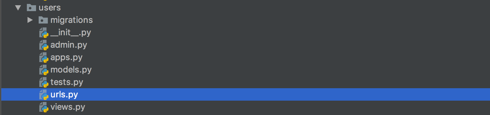
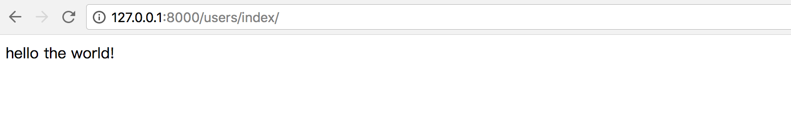

创建视图
同Flask框架一样，Django也用视图来编写Web应用的业务逻辑。
Django的视图是定义在子应用的views.py中的。
1. 创建
打开刚创建的users模块，在views.py中编写视图代码。
from django.http import HttpResponse
def index(request):
"""
index视图
:param request: 包含了请求信息的请求对象
:return: 响应对象
"""
return HttpResponse("hello the world!")
说明：
- 视图函数的第一个传入参数必须定义，用于接收Django构造的包含了请求数据的HttpReqeust对象，通常名为request。
- 视图函数的返回值必须为一个响应对象，不能像Flask一样直接返回一个字符串，可以将要返回的字符串数据放到一个HTTPResponse对象中。
2. 定义路由URL
1) 在子应用中新建一个urls.py文件用于保存该应用的路由。

2) 在users/urls.py文件中定义路由信息。
from django.conf.urls import url
from . import views
# urlpatterns是被django自动识别的路由列表变量
urlpatterns = [
# 每个路由信息都需要使用url函数来构造
# url(路径, 视图)
url(r'^index/$', views.index),
]
3) 在工程总路由demo/urls.py中添加子应用的路由数据。
from django.conf.urls import url, include
from django.contrib import admin
urlpatterns = [
url(r'^admin/', admin.site.urls), # django默认包含的
# 添加
url(r'^users/', include('users.urls')),
]
- 使用include来将子应用users里的全部路由包含进工程路由中；
- r'^users/' 决定了users子应用的所有路由都已/users/开头，如我们刚定义的视图index，其最终的完整访问路径为/users/index/。
include函数除了可以传递字符串之外，也可以直接传递应用的urls模块，如
from django.conf.urls import url, include
from django.contrib import admin
import users.urls # 先导入应用的urls模块
urlpatterns = [
url(r'^admin/', admin.site.urls),
# url(r'^users/', include('users.urls')),
url(r'^users/', include(users.urls)), # 添加应用的路由
]
4) 启动运行
重新启动django程序
python manage.py runserver
在浏览器中输入网址127.0.0.1:8000/users/index/ 可看到返回的信息
